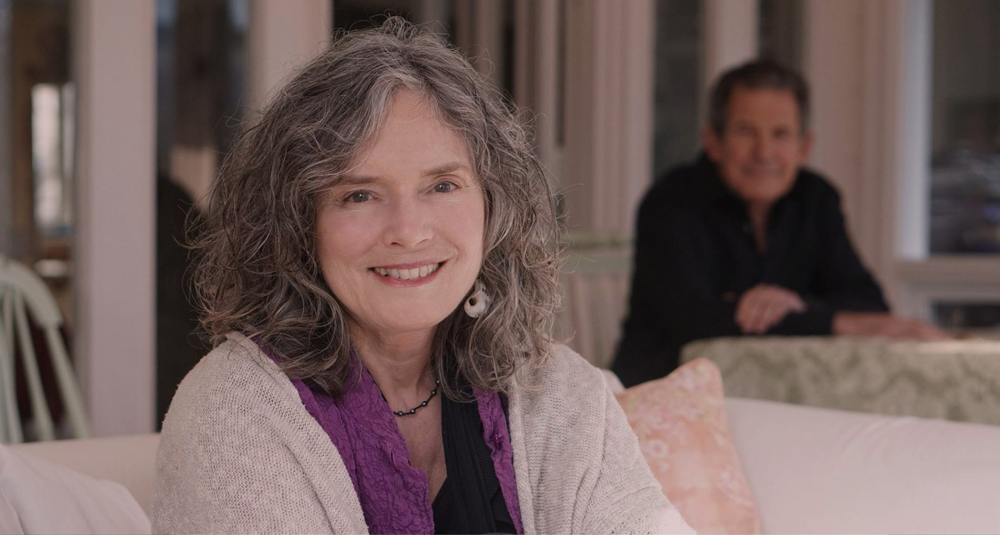

Meet Linda Francis
Linda Francis is a co-founder of the Seat of the Soul Institute. She is deeply dedicated to assisting individuals in aligning their personality and soul in order to create authentic power.
“Your emotions tell you what your soul wants you to know.”
— Linda FrancisLinda has been creating authentic power since she first read The Seat of the Soul in 1989. In 1993 she met Gary Zukav. They created a spiritual partnership and began sharing their discoveries about authentic power and spiritual partnership with others around the world through their workshops, events, and books.
She has co-authored two books with Gary Zukav, the New York Times Bestseller, The Heart of the Soul: Emotional Awareness and The Mind of the Soul: Responsible Choice. They also co-authored Thoughts from the Heart of the Soul: Meditations for Emotional Awareness and Self-Empowerment Journal: A Companion to the Mind of the Soul.
Get the booksLinda has been in the healing professions for more than four decades, first as a registered nurse, then a doctor of chiropractic, and now a teacher of authentic power.

She has co-designed curricula and co-facilitated events with Gary Zukav for three decades.
Linda has always been interested in exploring and stretching herself. She left her marriage at twenty-two when she realized that she was not modeling a loving relationship for her children. She has strived throughout her life for the deepest connections with others and the world. Guided by her intuition, she relocated to Mt. Shasta, where she met Gary Zukav.
Linda’s solo and soul climb to the summit of Mt. Shasta was a sacred vision quest that has informed her life since. She continues to open herself to her guidance and expand her experiences in order to support interested individuals around the world in creating authentic power and spiritual partnerships, individuals who know or suspect that spiritual growth is the most essential aspect of their lives and the reason they were born.
Linda’s soul returned home August 2022. She is still with us.
In Celebration of Linda Francis“Creating authentic power requires you feel fully a frightened part of your personality, one that is angry or jealous or resentful, and consciously choose to act from a loving part of your personality, one that is grateful, appreciative, or caring.”
— Linda Francis